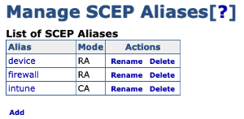

Configure EJBCA Server
The following sections cover how to configure the EJBCA server.
Launch an EJBCA Enterprise Cloud Server from AWS
For instructions on how to deploy EJBCA Cloud from Amazon Web Services (AWS) and log in to the EJBCA Admin Web for the first time, refer to the EJBCA Cloud AWS Launch Guide.
Certificate Authority Set up
If you do not already have Certificate Authorities (CAs) configured in EJBCA, follow the EJBCA Enterprise Quick Start Guide to set up a 2 Tier CA Hierarchy.
Modify Workstation End Entity Profile
The Intune device certificates use an Organizational Unit in the Subject DN Attributes. Since this attribute was not added following the Create End Entity Profiles instructions in the EJBCA Cloud AWS Quick Start Guide, do the following to add the attribute in the Corporate Workspace End Entity Profile:
Under RA Functions, select End Entity Profiles.
Edit the Corporate Workspace EE Profile and under Subject DN Attributes, select the (OU) Organizational Unit field for subject DN, and click Add.
Click Save to save the Corporate Workspace End Entity Profile.
Configure SCEP
Follow the steps below to create a SCEP alias to issue certificates managed by Intune.
Create New SCEP Alias
To create a new SCEP alias:
Login to EJBCA and click SCEP Configuration under System Configuration.
Click Add .
Specify a name for the new alias, in this example intune, and then click OK.
 The alias name does not have to be intune - that name is used in this example to align with configuring EJBCA to integrate with Intune.
The alias name does not have to be intune - that name is used in this example to align with configuring EJBCA to integrate with Intune.
The new SCEP alias is added to the list of aliases. Next, proceed to configure the Intune SCEP Alias.
Configure Intune SCEP Alias
To configure the newly created Intune SCEP alias:
Click the intune SCEP alias.
Click Switch to edit mode.
Edit the SCEP alias settings according to the following:
Operational mode: Select RA.
Authenticate through Microsoft Intune: Select.
RA End Entity Profile: Select.
RA Certificate Profile: Select the Certificate Profile configured in the End Entity Profile.
RA CA Name: Select the Issuing CA configured in the End Entity Profile.
Application ID from Azure: Enter the ID obtained from following the procedure in Configure Intune.
Application API Secret from Azure: Enter the secret obtained from following the procedure in Configure Intune.
Intune Tenant: Specify the Intune Tenant which is the fully qualified domain name (FQDN) of the organization configured in Intune.
The settings RA name generation scheme, RA name generation parameters, RA name generation prefix, and RA name generation postfix are left with the default values as depicted in the screenshot.
A Proxy was not required for EJBCA to connect to Intune. If a proxy is required then specify the applicable fields.
Click Save to store the Intune SCEP alias configuration.